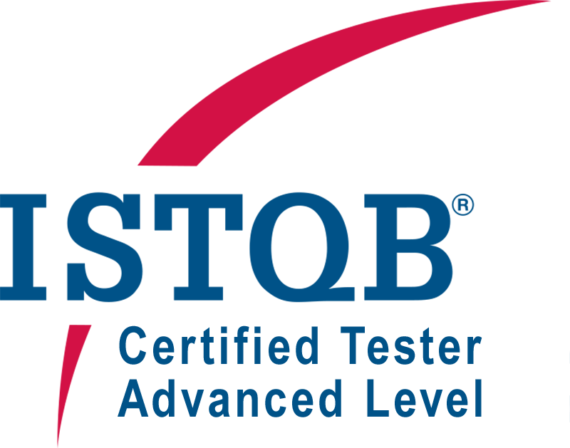
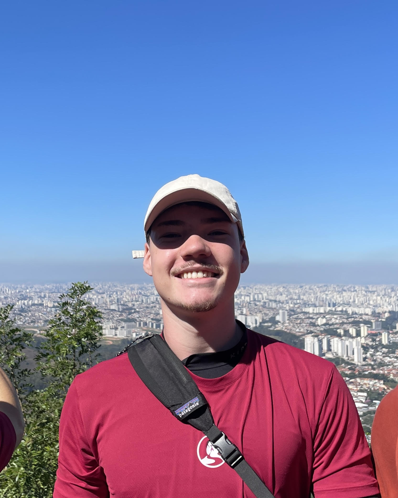

Certified Tester
Foundation Level
ISTQB®
2026estudante focado em desenvolvimento de software, interessado em
programação, lógica e construção de projetos.
Sinta-se à vontade para explorar e conhecer um pouco mais sobre
minhas habilidades e experiências.
Aqui você encontrará:

Olá! Meu nome é Thiago Varoni, sou estudante de Engenharia de Software e apaixonado por tecnologia, desenvolvimento de software e pela magia de transformar ideias em soluções reais. Atualmente, venho aprofundando meus conhecimentos em Java, além de fortalecer minha base em lógica e desenvolvimento web por meio do desenvolvimento de projetos práticos.
Tenho uma curiosidade nata para entender o que acontece nos bastidores dos sistemas e estou em constante busca por novas ferramentas, linguagens e boas práticas de código.
Quando tiro os olhos da tela, fico em movimento: skate, musculação e pedal são parte essencial da minha rotina. Acredito demais que o foco, a disciplina e a consistência dos esportes influenciam diretamente a forma como encaro meus desafios na programação. No tempo livre, gosto de testar novas ideias, explorar outros assuntos e evoluir um pouco mais a cada dia, tanto no lado pessoal quanto no profissional.

ISTQB®
2026Uma amostra da minha jornada prática e acadêmica. Aqui você encontra desde projetos interdisciplinares desenvolvidos na universidade até a minha atuação prática como monitor de tecnologia, onde ajudo a guiar novos estudantes no universo da lógica de programação e do desenvolvimento.
Se você quiser entrar em contato comigo, seja para discutir projetos, compartilhar ideias ou simplesmente bater um papo sobre tecnologia, sinta-se à vontade para me acompanhar em outras das redes sociais. Estou sempre aberto a novas conexões e oportunidades de aprendizado.